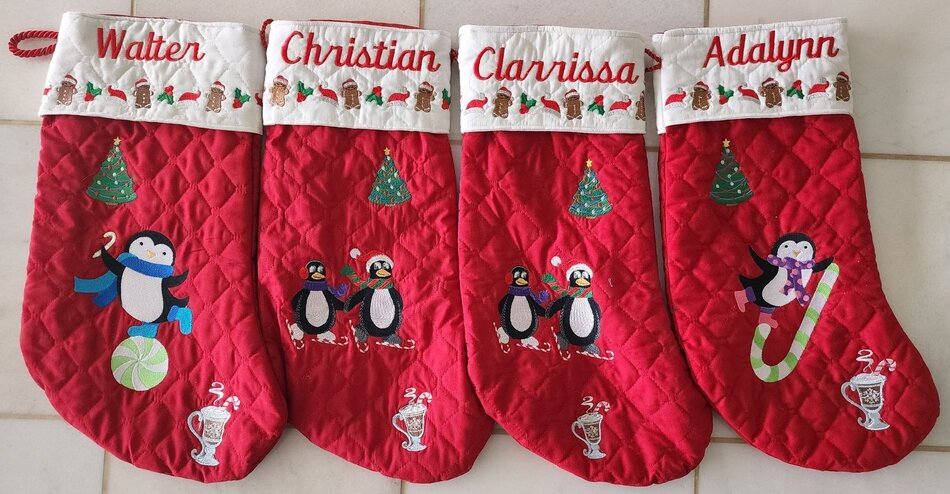

Bindy's Stockings
How to Create Your Stocking
Below is a diagram of a Christmas stocking. This is the design we recommend. If you are wanting a different design of patterns on your stocking, you may email a detailed description of an alternative design along with an image or link to the design. Please include the placement adjustments in your email with all your picked designs.
Step 1: Color
The first step is to choose a color for your stocking. You can have the same color for all the stockings being purchased, each stocking can be a different color, or any combination between those.
Step 2: Embroidery Designs
The next step is to pick designs. Most stockings we make have a boarder along the bottom of the white cuff. The diagram also shows spaces for three embroidery designs on the body of the stocking. Please provide either a link to the embroidery design or an image of the embroidery design with the number spot of where to place each design based on the stocking diagram.
Step 3: Email Designs
If you have any questions, we are happy to answer them. We respond within 1-2 business days via email. Please don’t hesitate to ask for help or design suggestions. Our goal is to provide you with your perfect Christmas stocking that you are excited to display each year.
